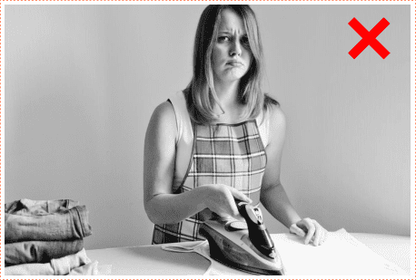
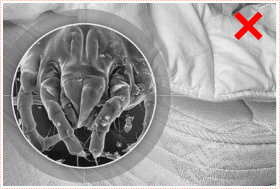
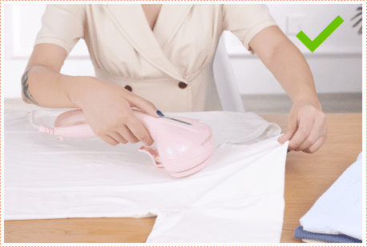

Σας αρέσει να σιδερώσετε;

Για ώρες να στέκεσται πίσω από μια σιδερώστρα, να προσπαθητε να φτιαξετε τα τσαλακωμένα ρουχα - θα συμφωνήσετε, οτι δεν ειναι και οτι πιο ευχαριστο.
Υπάρχουν μαξιλάρια ή χαλιά στο σπίτι σας; Ξέρατε ότι τα ακάρεα σκόνης συσσωρεύονται σε αυτά.
Και τα χνουδωτα,μαλακα παιχνίδια; Οι μητέρα σας θα σας πει πόσο δύσκολο είναι να τα φροντίσετε. Μετά το πλύσιμο, τα αρκουδάκια μοιάζουν σαν να τα εχουν μασήσει.
Υπάρχει μια απλή και κομψή λύση σε αυτά τα προβλήματα - το συστημα σιδερωματος Konka.
Η μοναδικη συσκευή θα σιδερωσει γρήγορα κάθε είδος υφασματος Θα σκοτώσει μικρόβια, βακτήριδια και ακάρεα σκόνης. Εύκολα θα εξαφανησει απο τα πράγματα σας καθε οσμη.
Η συσκευή δεν θα βλάψει ποτέ καποιο πινακα, πούλιες, στρας στα ρούχα. Οπως το απλο σίδερο, που δυστυχώς, συχνά χαλάει πράγματα.